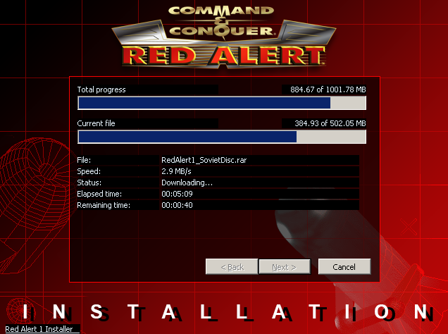

Command & Conquer: Red Alert fue un juego publicado allá por 1996 cuando MS/DOS todavía estaba dando sus últimos coletazos. Básicamente era un juego de estrategia en tiempo real desarrollado por Westwood con la intención de competir contra Blizzard con un juego bastante “macarra” en donde la historia giraba sobre la idea de que la Unión Soviética renacía de sus cenizas para invadir Europa del Este.
La instalación en Ubuntu 18.04 es muy simple. Desde el terminal debemos escribir: snap install cncra Esto descargará el instalador del juego que debemos iniciar para descargar todos los elementos del juego original en nuestro PC. Dependiendo de la conexión en unos pocos minutos estaremos listos para jugar durante horas a un juego que marcó toda una generación. 